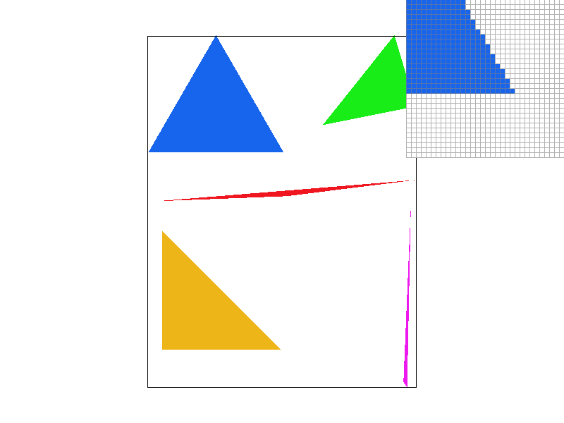
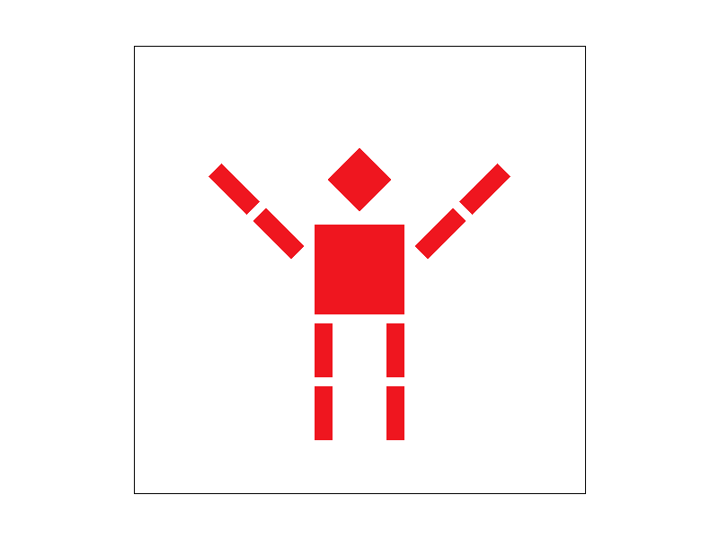
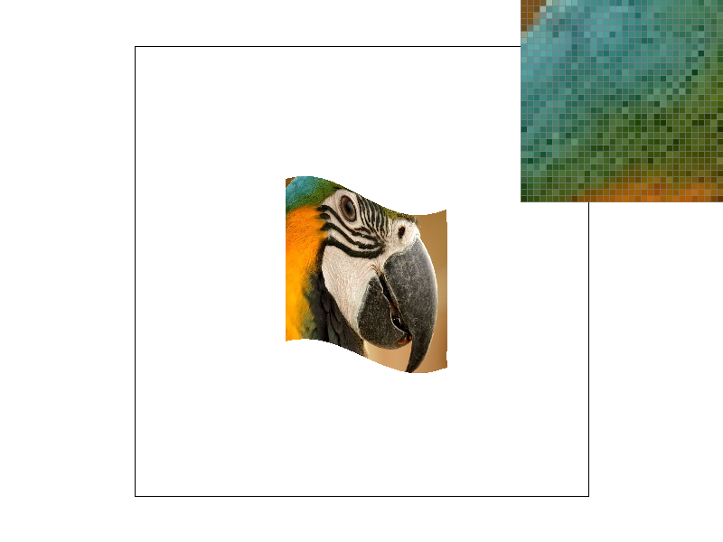
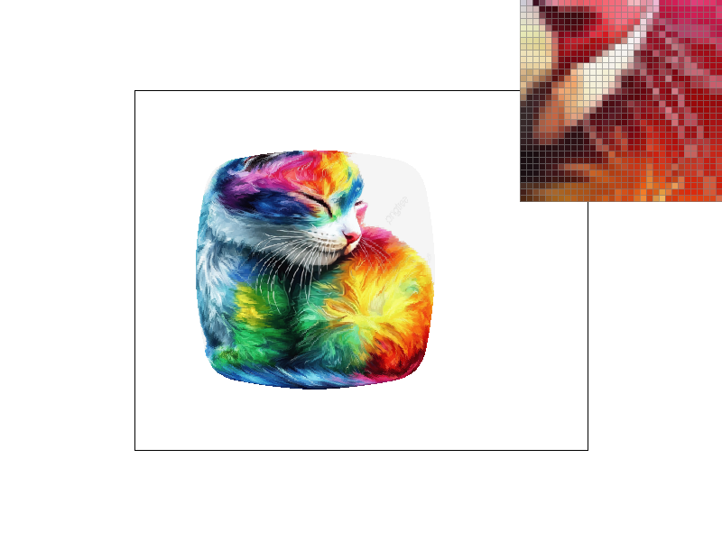

CS184/284A Spring 2025 Homework 1 Write-Up
Link to webpage: https://cal-cs184-student.github.io/hw-webpages-karena-c/hw1/index.html
Link to GitHub repository: https://github.com/cal-cs184-student/sp25-hw1-karena
Overview
In this homework, we created a simple rasterizer with features like drawing triangles, supersampling, transforms, and texture mapping. This was a really fun project that detailed how images are rendered and visualized on a screen. Before taking this class, I had thought of pixels as individual blocks of colour that made up a screen. It was so interesting to look into how they related to each other to develop a whole image and the math that turns colours into full images that our minds can visualize.
Task 1: Drawing Single-Color Triangles
I first create a bounding box based on the location of the 3 points of the triangle, determining the smallest and largest x and y values to look within. I then truncate using floor() and ceil() to ensure that we can standardize the pixel we start at. Therefore, this algorithm is the same as one that checks each sample within the bounding box of the triangle.
Next, I check the winding order to determine if the points are given in counter clockwise or clockwise order, and swap the order if needed to convert.
Finally, I loop through each pixel in the bounding box and check whether the center of the pixel is inside a triangle using a helper function L(px, py, x0, y0, x1, y1). If for all 3 edges the pixel is within the defined plane, it has to be inside of the triangle, and we fill the pixel in with the appropriate colour.
Task 2: Antialiasing by Supersampling
In rasterize_triangle, I sample at sqrt(sample_rate) * sqrt(sample_rate) to get the divisible grid to break down each pixel into. After checking whether each subsample is inside the triangle, I put it into the sample buffer.
In resolve_to_framebuffer, I update the function to average out all samples within the sample buffer for each overall pixel’s RGB value and put it into the framebuffer.
I also update and resize fill_pixel, set_sample_rate, and set_framebuffer_target to support the new buffer size with sample_rate.
Supersampling is useful because it removes jaggies and makes the image smoother overall. We can see this in the following images, where increased sample rate makes the edges of the triangle appear blurrier through a gradual transition between the inside and outside of the triangle.
This happens because with greater subdivisions, we can be more accurate about which parts of the pixel are contained in the rasterized triangle. As such, the colour for the pixel is averaged out, making it blend in with the outside edge of the triangle and smoothens out the overall look.
Task 3: Transforms
I made the robot lift up its arms using the transform rotation function. 🙆 Task 4: Barycentric coordinates
Barycentric coordinates blend colours within a triangle by using the areas of triangles formed by a point inside the triangle and the triangle's edges, helping us to blend out the colours better. It works by setting up weights for the colours depending on distance from the vertices.
Task 5: "Pixel sampling" for texture mapping
Pixel sampling is when we find the best colour a pixel should be based on the corresponding location on the given texture. In the nearest sampling method, we determine what colour the pixel should be by choosing the texel closest to the pixel coordinates. In bilinear sampling, we choose the color by averaging out the nearest texels. To implement this, I returned the nearest texels that correlate with the given pixel for nearest sampling, and weighted the texels next to the given pixel for bilinear sampling.
Nearest sampling results in blockier pixels, where the transitioning colour gradients between various colours are not as smooth as the bilinear. This is improved as the sample rate increases between both the bilinear sampling and the nearest pixel sampling, but across the board bilinear sampling forms smoother gradients with minimal jaggies. The most dramatic difference would be seen when textures do not have a strong edge (gradual transition/blend) or when there are minimal pixels available to sample from.
Task 6: "Level Sampling" with mipmaps for texture mapping
Level sampling helps determine which mipmap to project the texture on if the image and texture are not of the same size. In other words, it projects the given image onto the described texture. To achieve this, I calculated the level it should be at and sampled using the methods defined in Part 5.
At L_ZERO, I assume that the level will be 0. At L_NEAREST, I find the nearest appropriate mipmap level, and at L_LINEAR I weight the level and the one above it.
Level sampling balances performance and aliasing reduction, as higher mipmap levels reduce aliasing but may cause blurriness. Increasing the samples per pixel makes antialiasing better but it is at the cost of higher memory usage and slower performance due to the additional computations required per pixel.
Here is an example 2x2 gridlike structure using an HTML table. Each tr is a row and each td is a column in that row. You might find this useful for framing and showing your result images in an organized fashion.
|
|
|
|

|
|